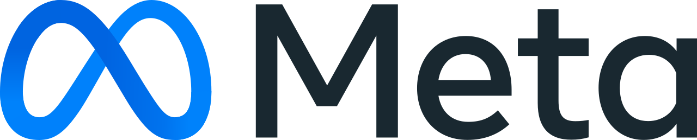
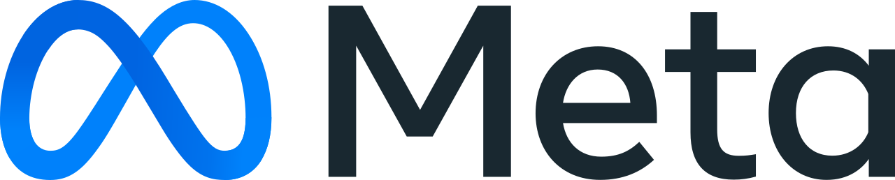
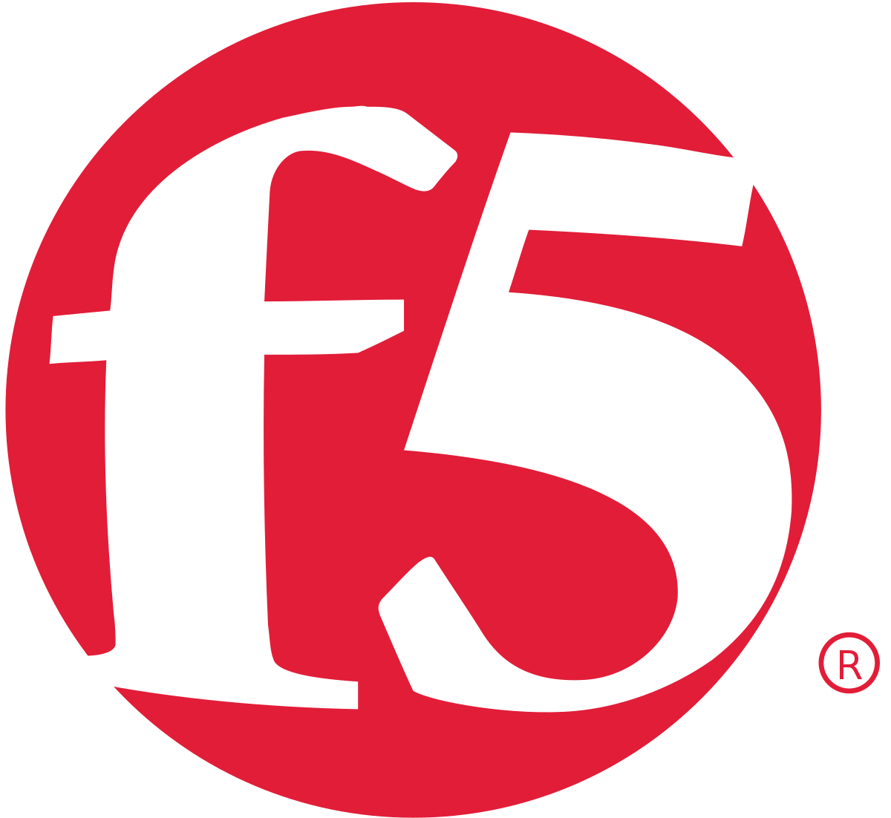
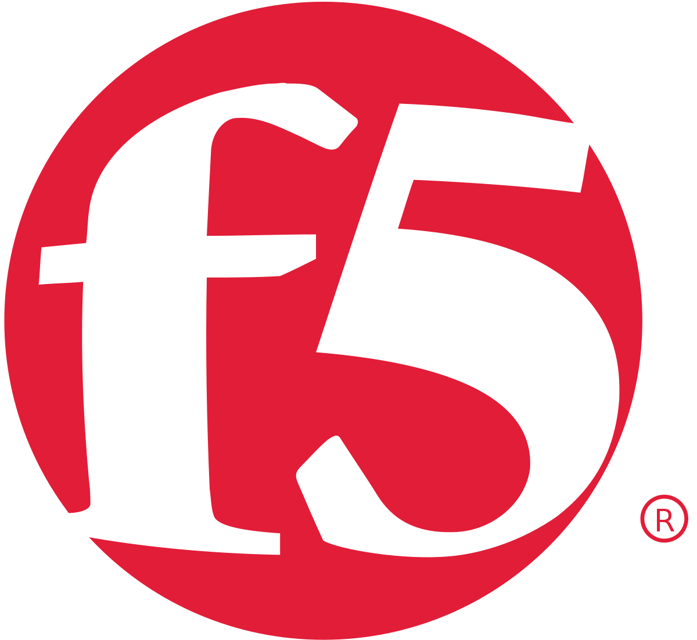
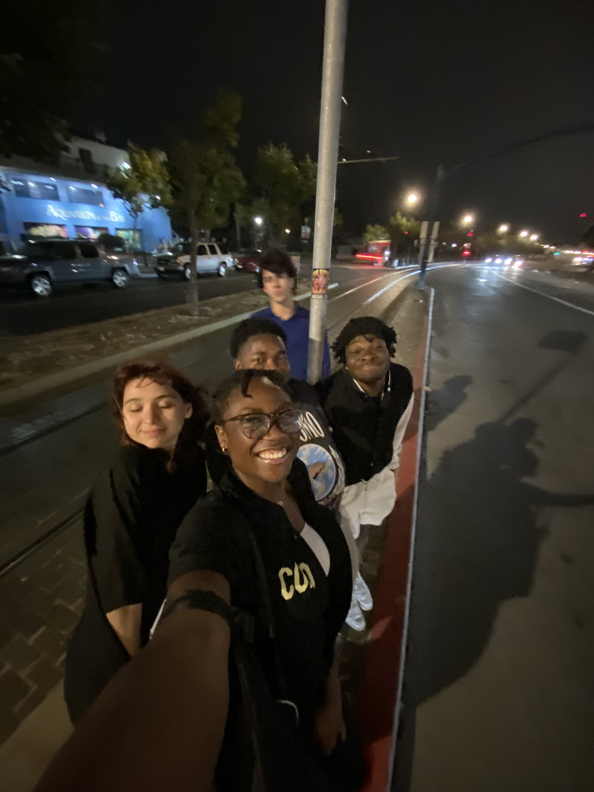
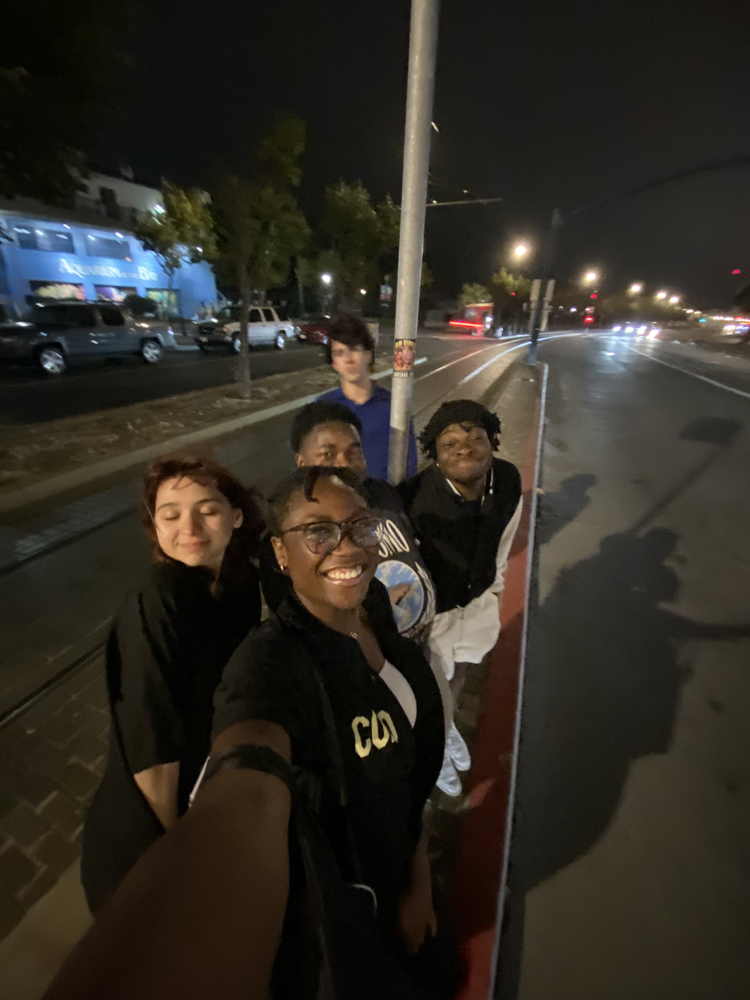
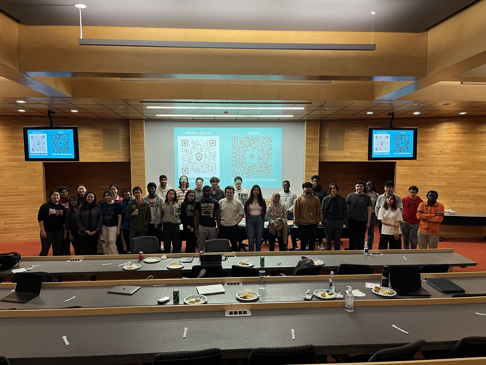
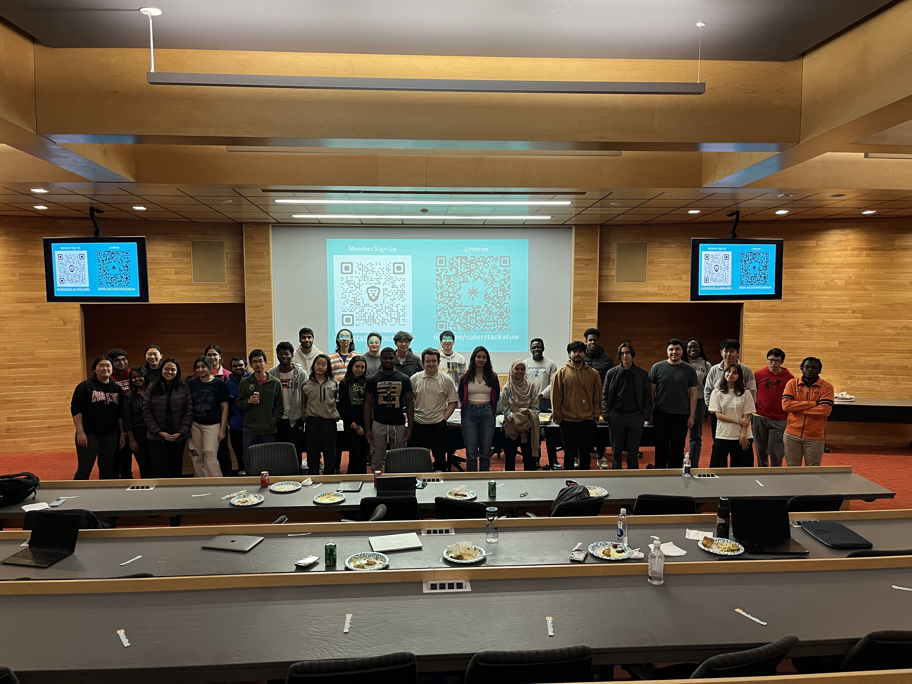

Welcome to ColorStack at UW-Madison! We are a community of students passionate about technology and diversity.
ColorStack's mission is to increase the number of Black, Latinx, and Indigenous technologists who graduate and go on to start rewarding technical careers.
At ColorStack at UW-Madison, we believe in action. We're committed to fostering real change in the tech industry by providing an inclusive environment on campus for all students that's dedicated to bolstering the effectiveness of the ColorStack national organization.
By offering access to various resources, we aim to ensure every student is confident, on track, and optimistic about their future in tech. Education is just the beginning. Our goal is to open doors for our members into the tech world. Through targeted initiatives like resume workshops, company networking events, interview prep workhops, and conferences, we're shaping the future one career at a time.
Find internship, co-op, and scholarship opportunities posted in our Discord
Get career advice and learn how to stand out when recruiting
Speak with recruiters and engineers at our company-led workshops
Meet new friends and find your support system in college and beyond
Meet some of our outstanding members who are making waves in tech. Check out their stories to learn about their journey and achievements.
Inspired by the rapid technological evolution witnessed during his upbringing, Aaron Torres is on the cusp of completing his Computer Science degree at the University of Wisconsin-Madison. His path towards a career as a software engineer illustrates the transformative power of dedication and the comprehensive education in computer science he received. Read about Aaron's journey.
For David Salazar, childhood fascination with the intricate worlds of Super Mario and Pokémon sparked an interest in programming. As a senior in Computer Sciences at UW-Madison, he's now on the verge of launching a promising career in data engineering. Discover David's path.


 



 



 

 
